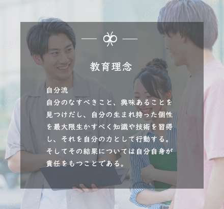
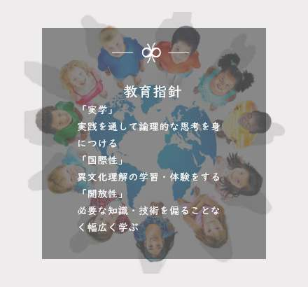

建学の精神と教育理念
努力をすべての基とし
偏見を排し
幅広い知識を身につけ
国際的視野に立って判断ができ
実学を通して創造力および人間味豊かな専門性ある人材の養成を目的とする


本学の創立は1966年。
当初は文学部国文学科、英文学科、経済学部経済学科から始まり、
時代の変遷ごとに学び舎としての可能性を広げてきました。
現在、板橋、八王子、宇都宮、福岡、霞ヶ関と
5つのキャンパスを有する総合大学へと成長しています。
本学がさらにどのように成長し、その成長力によって社会にいかに貢献していくか。この大きな課題についても、私たちは引き続き思索を重ね、さまざまなプランを打ち出していきます。